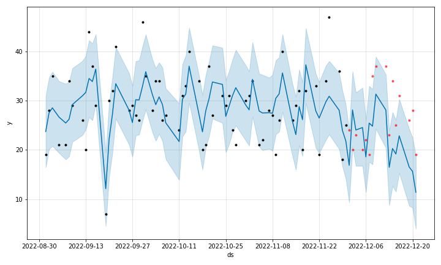
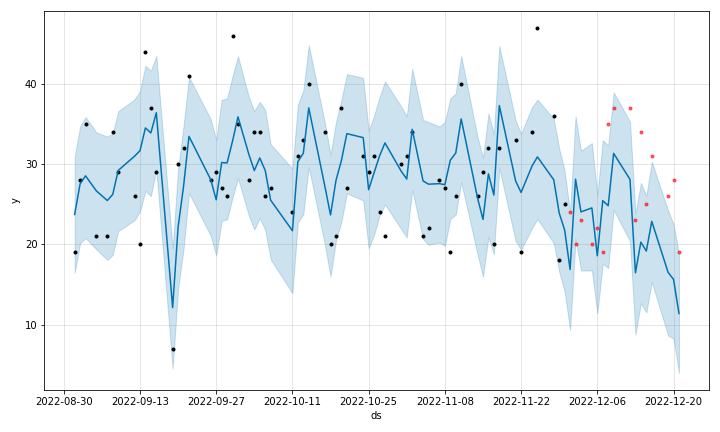

売上とさまざまな要因の関係について
横軸：日付
縦軸：売上個数
黒い点：実際の値
青い線：予測値
青い帯：予測範囲（誤差込み）
みらいさんから頂いたデータのうち、8割を用いて売り上げ個数とさま
ざまな要因を解析し、売り上げの予測ツールを作成しました。そして、
残り２割のデータでその正確さを検証しました。
予測ツールを用いた予測値は青い線、誤差を含めた予測範囲は青い帯で
表示しています。
 

このグラフは先ほどのグラフに赤い点（実際の値）を加えたものです。
予測である青い線や帯との合致率を見ると、この予測の正確性が
分かります。
各要因の影響の大きさ
これらの要因は数値が大きくなればなるほど売上個数を増やしている
要因になります。表の数字が大きいほど影響が大きいといえます。
これらの要因は数値が大きくなればなるほど売上個数を減らしている
要因になります。表の数字が大きいほど影響が大きいといえます。